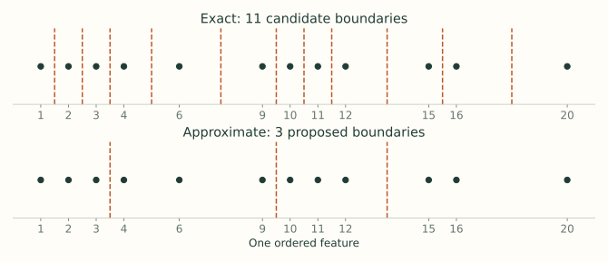
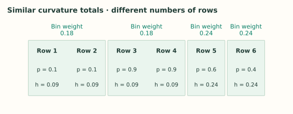
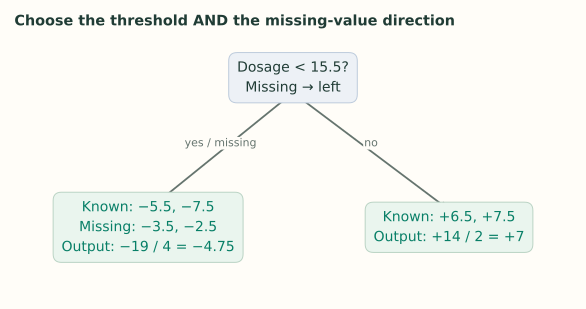

4. Optimizations: Search Less, Move Data Faster
Notes on StatQuest with Josh Starmer · Optimizations: Search Less, Move Data Faster · 24:27 video. Original explanations and redrawn figures accompany the video.
The first three lectures explain what XGBoost calculates. This lecture explains how it avoids doing unnecessary work when there are many rows and features.
Greedy search still has many candidates
Video 1:34 ↗At a node, XGBoost scores candidate feature thresholds and chooses the best available split. “Greedy” means it makes that local choice without exploring every possible future tree below each candidate.
Even this can be expensive. A continuous feature with a million distinct values has nearly a million possible boundaries. Repeating a full scan across many features and nodes costs time.
Approximate search considers fewer boundaries
Video 3:59 ↗Instead of testing every boundary, choose a smaller set of candidate cuts. Quantiles put those cuts where the data lies, rather than wasting equal-width intervals on nearly empty ranges.

For each candidate, the scoring rule stays the same: collect left and right gradient and curvature totals, then calculate gain. Approximation changes which splits are considered, not the meaning of gain.
More bins give the search finer resolution and more work. They do not guarantee better validation performance. A cut can only separate values lying on opposite sides of an available boundary.
Summarize pieces of the data and merge the summaries
Video 6:40 ↗To get candidate quantiles from a large dataset, XGBoost need not send every sorted value to one machine. Workers can summarize their local data with a quantile sketch, and those summaries can be merged into an approximate summary of the whole feature.
The worker summaries preserve approximate information about where ranks fall. They are not independent trees whose predictions get averaged. Work inside tree construction can run in parallel; the next boosting round still depends on the predictions produced by preceding rounds.
Weighted quantiles allocate resolution by curvature
Video 8:03 ↗Ordinary quantile bins aim for similar row counts. The lecture’s weighted quantiles aim for similar total weight, using each row’s Hessian $h_i$ as its weight.
For unweighted squared-error regression, every $h_i=1$, so weighting reduces to ordinary counts. For binary log loss, $h_i=p_i(1-p_i)$. The lecture uses six ordered observations with the following current probabilities:
| Ordered row | Current $p$ | Weight $p(1-p)$ |
|---|---|---|
| 1 | 0.1 | 0.09 |
| 2 | 0.1 | 0.09 |
| 3 | 0.9 | 0.09 |
| 4 | 0.9 | 0.09 |
| 5 | 0.6 | 0.24 |
| 6 | 0.4 | 0.24 |
The first two weights add to 0.18, as do the next two. Each of the last rows already carries 0.24. The video illustrates bins $[1,2]$, $[3,4]$, $[5]$, $[6]$: similar weight totals, despite different row counts.

Why does that help? If two rows need opposite corrections but fall in the same bin, the search cannot separate them using this feature. Finer bins near uncertain probabilities can make that separation available. This is curvature weighting, not “give every mistake more weight”: a confidently wrong prediction can still have small $p(1-p)$.
Current API distinction: tree_method="approx" uses Hessian-weighted sketching before each tree. "hist" uses a global sketch based on user-supplied row weights, then accumulates gradients and Hessians in those bins. The lecture’s sketch explanation should not be read as the exact procedure for every tree method. See Tree Methods.
Learn which branch missing values should take
Video 16:13 ↗Suppose dosage is missing for some rows, but their target values are known. They still have residuals; we just cannot order them by dosage. For each proposed threshold, try sending all rows missing that feature left, then try sending them right. Keep the better gain and store its direction.
The lecture’s known dosages are $[5,10,21,25]$, with residuals $[-5.5,-7.5,6.5,7.5]$. Two rows have missing dosage and residuals $[-3.5,-2.5]$. Use $\lambda=0$.
At threshold 15.5, the known rows split into negative and positive corrections. The parent has residual sum −5 across six rows, so its score is $25/6$. Sending the missing rows left gives
Sending them right instead gives
| Threshold | Missing left: gain | Missing right: gain |
|---|---|---|
| 7.5 | 54.00 | 26.13 |
| 15.5 | 184.08 | 96.33 |
| 23 | 83.33 | 10.67 |

The winning choice is threshold 15.5 with missing values sent left. Another node or feature may learn a different default. The model has learned a route, not an imputed numeric dosage.
With dense Python arrays, use np.nan for missing values. Zero is an ordinary observed value unless you explicitly designate it as missing. Sparse omitted entries have different semantics for tree boosters; see the XGBoost FAQ.
Keep the scoring loop supplied with data
Video 20:34 ↗Arithmetic is only part of runtime. A processor can spend much of its time waiting for the needed gradients, Hessians, and feature values.
| Optimization | What it saves |
|---|---|
| Cache-aware access | Arrange access and buffer gradient statistics so the inner scoring loop waits less on slower memory. |
| Reusable sorted blocks | Organize feature data for repeated scans instead of repeatedly sorting everything from scratch. |
| Out-of-core blocks | Stream manageable blocks when the whole dataset does not fit in main memory. |
| Compression and prefetching | Read fewer bytes and prepare the next block while computation processes the current one. |
| Sharding across disks | Read different data blocks concurrently where the storage system supports it. |
These mechanisms are described in the original XGBoost paper, especially Sections 4 and 5. They improve data access around the same gradient and Hessian calculations.
Use fewer rows or features per tree
Video 23:11 ↗The lecture ends with two more ways to reduce work: sample rows and sample features. In the Python API, subsample controls the row fraction and colsample_bytree controls the feature fraction for each tree.
Sampling also changes the fitted model and can reduce overfitting, so choose these settings using validation results. Across all these optimizations, keep track of what changed: the available candidates, the data used for a tree, or the cost of moving the same data through the computer.